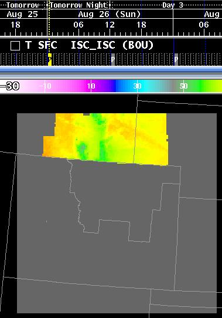
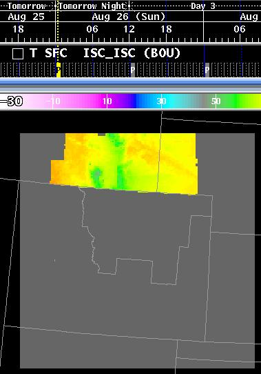

There are other GFE Suite programs besides the GFE. Some of these are product generators in formats of ascii grid, and png (portable network graphics).
Programs other than the GFE are described in the following user
guides:
| Ascii Grid Generator (ifpAG) | ||
 |
IFP IMAGE File Generator | |
 |
ifpnetCDF Formatter | |
| Break All Locks | ||
     |
iscMosaic (used to input netCDF files generated from the ifpnetCDF formatter program or other programs that write the netCDF files into that format). This program is part of the intersite coordination of grids package. | |
 |
moveGFEData (used to move configuration data from one user to another in the proper manner). This allows movement of color tables, edit areas, sample sets, weather element groups, edit area groups, gfe and ifpIMAGE configuration files, selection time range definitions, isc discrepancy value grids, and tools/procedures. | |
| getNotify (diagnostic program to "watch" notifications from the awips qpid server to the clients). Simply outputs the received notifications for database inventory, grid inventory, sample set, edit area, text data, and user messages. | ||
| ifpServerText is used to save, retrieve, inventory, or delete smart tools, procedures, text products, utilities, and gfe/ifpIMAGE configuration files from the command line. Edit areas, sample sets, color tables, weather element groups, and select time range definitions may also be saved and retreived. Map background inventory and data is accessible through ifpServerText. | ||
| sendGfeMessage is a utility
to send a message to all connected EDEX clients, such as
GFEs. The message will appear in the status bar. |
||
| purgeAllGrids
is a utility that will remove all grids from the specified
database. This needs to be used with caution. |
||
 |
GHG
Monitor is a utility to monitor VTEC hazards and alert the
forecaster as products are about to expire. |
|
 |
dumpAT
is a utility to dump out the contents of the VTEC
active table. |